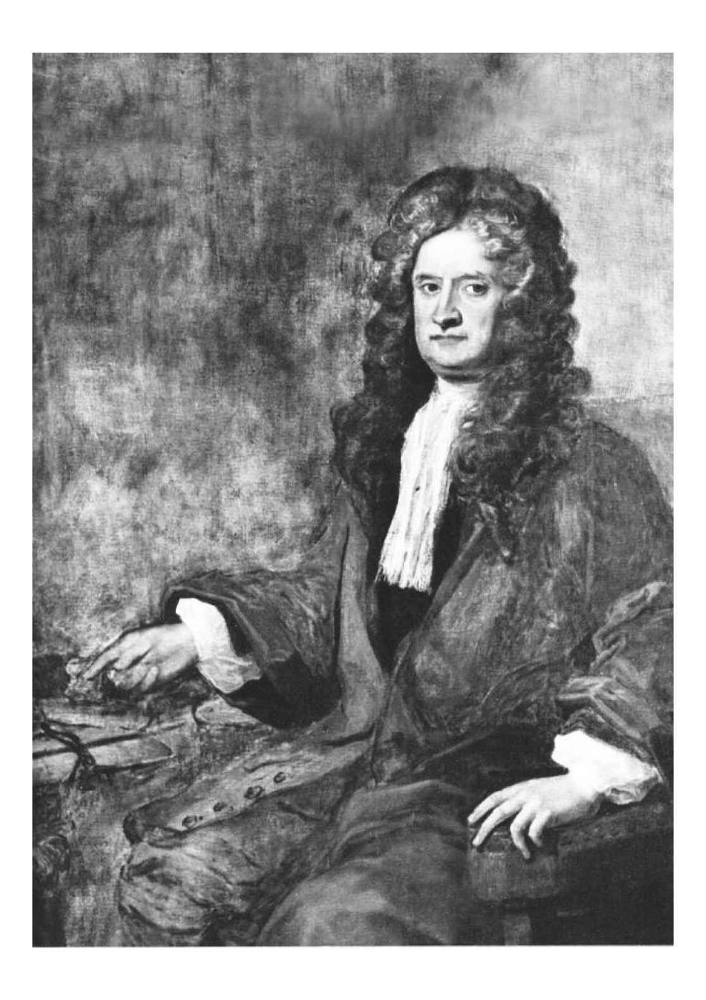

总释
· General Scholium ·
涡旋假说面临许多困难。每颗行星通过伸向太阳的半径掠过正比于环绕时间的面积，涡旋各部分的周期正比于它们到太阳距离的平方；但要使行星周期获得到太阳距离的3/2次幂的关系，涡旋各部分的周期应正比于距离的3/2次幂——然而，即便这些星体沿其轨道维持运动可能仅仅是由引力规律的作用，但它们绝不可能从一开始就由这些规律中自行获得其规则的轨道位置——这个最为动人的太阳、行星和彗星体系，只能来自一个全能全智的上帝（Being）的设计和统治。

1703年的牛顿画像
涡旋假说面临许多困难。每颗行星通过伸向太阳的半径掠过正比于环绕时间的面积，涡旋各部分的周期正比于它们到太阳距离的平方；但要使行星周期获得到太阳距离的3/2次幂的关系，涡旋各部分的周期应正比于距离的3/2次幂。而要使较小的涡旋关于土星、木星以及其他行星的较小环绕得以维持，并在绕太阳的大涡旋中平稳不受干扰地进行，太阳涡旋各部分的周期则应当相等；但太阳和行星绕其自身的轴的转动，又应当对应于属于它们的涡旋运动，因而与上述这些关系相去甚远。彗星的运动极为规则，是受制于与行星运动相同的规律支配的，但涡旋假说却完全无法解释；因为彗星以极为偏心的运动自由地通过同一天空中的所有部分，绝非涡旋说可以容纳。
在我们的空气中抛体只受到空气的阻碍。如果抽去空气，像在波义耳先生所制成的真空里面那样，阻力即消失；因为在这种真空里一片羽毛（a bit of fine）与一块黄金的下落速度相等。同样的论证必定也适用于地球大气以上的天体空间；在这样的空间里，没有空气阻碍运动，所有的物体都畅通无阻地运动着；行星和彗星都依照上述规律沿着形状和位置已定的轨道进行着规则的环绕运动；然而，即便这些星体沿其轨道维持运动可能仅仅是由引力规律的作用，但它们绝不可能从一开始就由这些规律中自行获得其规则的轨道位置。
六个行星在围绕太阳的同心圆上转动，运转方向相同，而且几乎在同一个平面上。有十个卫星分别在围绕地球、木星和土星的同心圆上运动，而且运动方向相同，运动平面也大致在这些行星的运动平面上；鉴于彗星的行程沿着极为偏心的轨道跨越整个天空的所有部分，不能设想单纯力学原因就能导致如此多的规则运动；因为它们以这种运动轻易地穿越了各行星的轨道，而且速度极大；在远日点，它们运动最慢，滞留时间最长，相互间距离也最远，因而相互吸引造成的干扰也最小。这个最为动人的太阳、行星和彗星体系，只能来自一个全能全智的上帝（Being）的设计和统治。如果恒星都是其他类似体系的中心，那么这些体系也必定完全从属于上帝的统治，因为这些体系的产生只可能出自于同一份睿智的设计；尤其是，由于恒星的光与太阳光具有相同的性质，而且来自每个系统的光都可以照耀所有其他的系统：为避免各恒星的系统在引力作用下相互碰撞，他便将这些系统分置在相互很远的距离上。
上帝不是作为宇宙之灵而是作为万物的主宰来支配一切的；他统领一切，因而人们惯常称之为“我主上帝”（παγτοκρατωρ ）或“宇宙的主宰”；须知God （上帝）是一个相对词，与仆人相对应，而且Deity （神性）也是指上帝对仆人的统治权，绝非有如那些认定上帝是宇宙之灵的人们所想象的那样，是指其自治权。至高无上的上帝作为一种存在物必定是永恒的、无限的、绝对完美的；但一种存在物，无论它多么完美，只要它不具有统治权，则不可称之以“我主上帝”；须知我们常说，我的上帝，你的上帝，以色列人的上帝，诸神之神，诸王之王；但我们不说我的永恒者，你的永恒者，以色列人的永恒者，神的永恒者；我们还不说，我的无限者，或我的完美者：所有这些称谓都与仆人一词不构成某种对应关系。上帝这个词 (1) 一般用以指君主；但并不是每个君主都是上帝。只有拥有统治权的精神存在者才能成其为上帝：一个真实的、至上的或想象的统治才意味着一个真实的、至上的或想象的上帝。他有真实的统治意味着真实的上帝是能动的，全能全智的存在物；而他的其他完美性，意味着他是至上的，最完美的。他是永恒的和无限的，无所不能的，无所不知的；即，他的延续从永恒直达永恒；他的显现从无限直达无限；他支配一切事物，而且知道一切已做的和当做的事情。他不是永恒和无限，但却是永恒的和无限的；他不是延续或空间，但他延续着而且存在着。他永远存在，且无所不在；由此构成了延续和空间。由于空间的每个单元都是永存的，延续的每个不可分的瞬间都无所不在的，因而，万物的缔造者和君主不能是虚无和不存在。每个有知觉的灵魂，虽然分属于不同的时间和不同的感觉与运动器官，仍是同一个不可分割的人。在延续中有相继的部分，在空间中有共存的部分，但这两者都不存在于人的人性和他的思维要素之中；它们更不存在于上帝的思维实体之中。每一个人，只要他是个有知觉的生物，在其整个一生以及其所有感官中，他都是同一个人。上帝也是同一个上帝，永远如此，处处如此。不论就实效而言，还是就本质而言，上帝都是无所不在的，因为没有本质就没有实效。一切事物都包含在他 (2) 之中并且在他之中运动；但却不相互影响：物体的运动完全无损于上帝；无处不在的上帝也不阻碍物体的运动。所有的人都同意至高无上的上帝的存在是必要的。所有的人也都同意上帝必然永远存在而且处处存在。因此，他必是浑然一体的，他浑身是眼，浑身是耳，浑身是脑，浑身是臂，浑身都有能力感觉、理解和行动；但却是以一种完全不属于人类的方式，一种完全不属于物质的方式，一种我们绝对不可知的方式行事。就像盲人对颜色毫无概念一样，我们对全能的上帝感知和理解一切事物的方式一无所知。他绝对超脱于一切躯体和躯体的形状，因而我们看不到他，听不到他，也摸不到他；我们也不应当向着任何代表他的物质事物礼拜。我们能知道他的属性，但对任何事物的真正本质却一无所知。我们只能看到物体的形状和颜色，只能听到它们的声音，只能摸到它们的外部表面，只能嗅到它们的气味，尝到它们的滋味；但我们无法运用感官或任何思维反映作用获知它们的内在本质：而对上帝的本质更是一无所知。我们只能通过他对事物的最聪明，最卓越的设计，以及终极的原因来认识他；我们既赞颂他的完美，又敬畏并且崇拜他的统治：因为我们像仆人一样地敬畏他；而没有统治，没有庇佑，没有终极原因的上帝，与命运和自然无异。盲目的形而上学的必然性，当然也是永远存在而且处处存在的，但却不能产生出多种多样的事物。而我们随时随地可以见到的各种自然事物，只能来自一个必然存在着的存在物的观念和意志。无论如何，用一个比喻，我们可以说，上帝能看见，能说话，能笑，能爱，能恨，能盼望，能给予，能接受，能欢乐，能愤怒，能战斗，能设计，能劳作，能营造；因为我们关于上帝的所有见解，都是以人类的方式得自某种类比的，这虽然不完备，但也具有某种可取之处。我们对上帝的谈论就到这里，而要做到通过事物的现象了解上帝，实在是非自然哲学莫属。
迄此为止我们以引力作用解释了天体及海洋的现象，但还没有找出这种作用的原因。它当然必定产生于一个原因，这个原因穿越太阳与行星的中心，而且它的力不因此而受丝毫影响；它所发生的作用与它所作用着的粒子表面的量（像力学原因所惯常的那样）无关，而是取决于它们所包含的固体物质的量，并可向所有方向传递到极远距离，总是反比于距离的平方减弱。指向太阳的引力是由指向构成太阳的所有粒子的引力所合成的，而且在离开太阳时精确地反比于距离的平方，直到土星轨道，这是由行星的远日点的静止而明白无误地证明了的；而且，如果彗星的远日点也是静止的，这一规律甚至远及最远的彗星远日点。但我迄今为止还无能为力于从现象中找出引力的这些特性的原因，我也不构造假说；因为，凡不是来源于现象的，都应称其为假说；而假说，不论它是形而上学的或物理学的，不论它是关于隐秘的质的或是关于力学性质的，在实验哲学中都没有地位。在这种哲学中，特定命题是由现象推导出来的，然后才用归纳方法做出推广。正是由此才发现了物体的不可穿透性，可运动性和推斥力，以及运动定律和引力定律。对于我们来说，能知道引力的确实存在着，并按我们所解释的规律起作用，并能有效地说明天体和海洋的一切运动，即已足够了。
现在我们再补充一些涉及某种最微细的精气的事情，它渗透并隐含在一切大物体之中；这种精气的力和作用使物体粒子在近距离上相互吸引，而且在相互接触时即粘连在一起，使带电物体的作用能延及较远距离，既能推斥也能吸引附近的物体；并使光可以被发射、反射、折射、衍射，并对物体加热；而所有感官之受到刺激；动物肢体在意志的驱使下运动，也是由于这种精气的振动，沿着神经的固体纤维相互传递，由外部感觉器官通达大脑，再由大脑进入肌肉。但这些事情不是寥寥数语可以解释得清的，而要精确地得到和证明这些电的和弹性精气作用的规律，我们还缺乏必要而充分的实验。
————————————————————
(1) 原注：Pocock博士由阿拉伯语中表示君主（Lord）的词du（间接格为di）推演出拉丁词Deus。在此意义上，诗篇82.6和《约翰福音》10.35中的国王（prices）称为神。而《出埃及记》4.16和7.1中的摩西的兄亚伦称摩西为上帝，法老也称他为上帝。而在相同意义上已故国王的灵魂，在以前被异教徒称为神，但却是错误的，因为他们没有统治权。
(2) 原注：这是古代人的看法。如在西赛罗的《论神性》（De natura deorum）第一章中的毕达哥拉斯，维吉尔《农事诗》（Geogics）第四章第220页和《埃涅阿斯记》（Aeneid）第六章第721页中的泰勒斯，阿那克西哥拉，维吉尔。斐洛在《寓言》（Allegories）第一卷开头。阿拉托斯在其《物象》（Phoeromena）开头。也见于圣徒的写作：如《使徒行传》17章27、28节中的保罗，《约翰福音》14章2节，《申命记》4章39节和10章14节中的摩西。《诗篇》139篇7，8，9，节中的大卫。《列王记·上》8章27节中的所罗门。《约伯记》22章12，13，14节。《耶利米书》23章23，24节。崇拜偶像的人认为太阳，月亮星辰，人的灵魂，以及宇宙的其他部分都是至上的上帝的各个部分，因而应当受到礼拜，但却是错误的。